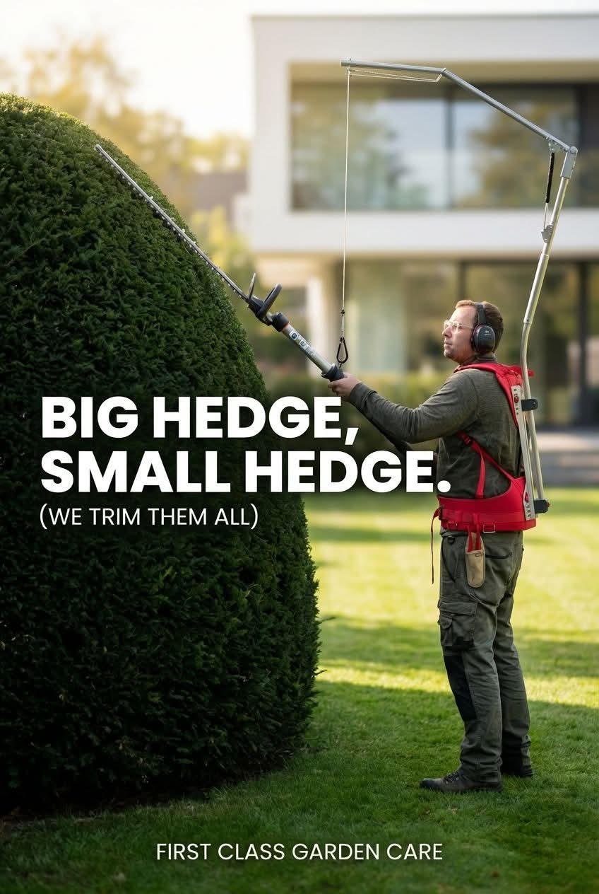
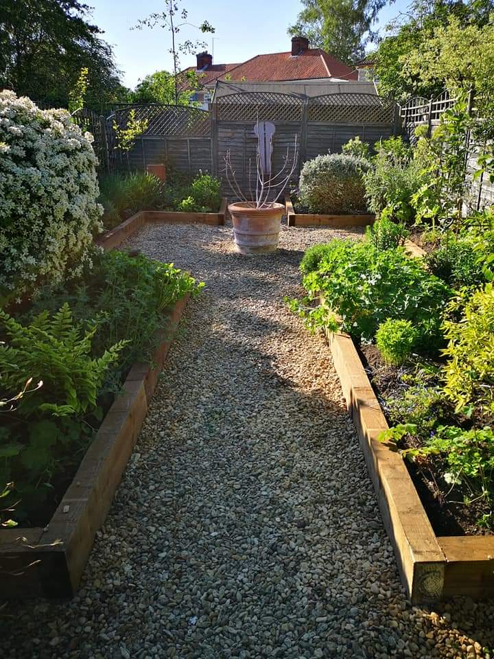

A Second-Generation Grounds & Garden Specialist
Green Seasons is run by Tim Harris, a second-generation grounds and garden specialist with a strong horticultural background and years of hands-on experience maintaining outdoor spaces to a high standard.

Born Into the Garden
Hi, I'm Tim!
I'm the Owner and operator of Green Seasons. I am a second generation gardener born and raised in Oxford with gardening running in my blood. With my mother also being a professional gardener, I've been submersed in flora and fauna since a young age.
I come from a strong horticultural background with a love of planting and design. Over the years my business has developed and evolved into catering for larger spaces, including commercial and large residential sites, while still servicing the humble home gardens.
Because of my strong gardening background and investment into modern and efficient equipment, I'm strongly placed in being able to offer a wide range of services to the private and public sector on a range of scales.
Job satisfaction plays a big part in my work! Taking pride in what I do and seeing the positive reactions from my clients is what drives me to deliver great results. As an owner operator I'm always on site to make sure the work is to a high standard. Whether it's just myself or a team of three, it's me that signs it off.
2nd
Generation Gardener
Oxford
Born & Raised
Always
Owner On Site
Our Commitment to You
Six principles that shape every visit, every quote, and every conversation we have with our clients.
Reliability You Can Count On
We show up when we say we will, consistently, professionally, and without the need for chasing. Your grounds are in safe, dependable hands every single visit.
True Plant Knowledge
We don't just cut and go. As plant people, we advise on pruning, planting, training, and long-term care - knowledge that most gardeners simply don't carry.
Residential & Commercial
From private estates and family gardens to business parks and housing developments, we deliver the same high standard of care whatever the scale or setting.
Tailored to You
No two gardens are alike. We work flexibly around your needs - whether that's a one-off clearance, seasonal treatments, or a fully managed year-round maintenance programme.
Professional-Grade Equipment
We invest in professional equipment to ensure every job is completed efficiently, safely, and to the highest possible finish - from compact residential plots to large open grounds.
Property Value Enhancement
A well-maintained garden adds real kerb appeal and long-term value. Our consistent, high-standard approach protects and enhances your property investment over time.

Far More Than a Garden Cut
We offer far more than most when it comes to gardening. Knowing how and when to plant, prune, and train takes a whole other level of expertise, and that knowledge is built into every visit we make.

Ready for a Garden You're Proud Of?
Whether you need a one-off tidy-up or a fully managed maintenance programme, we'd love to hear about your garden. Contact Tim today for a free, no-obligation quote.